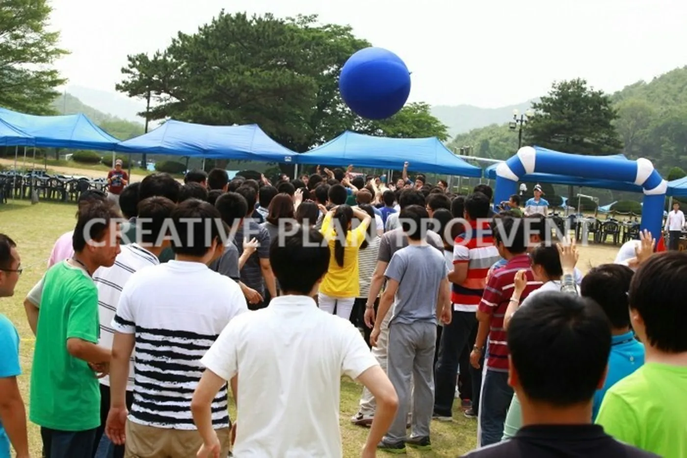
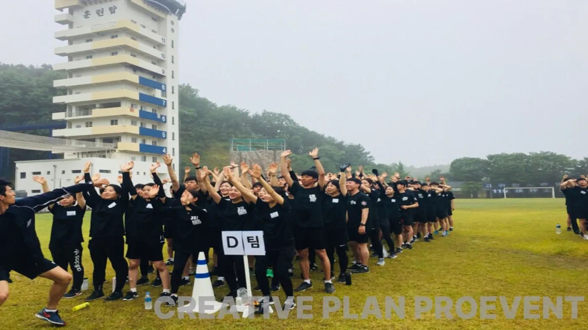
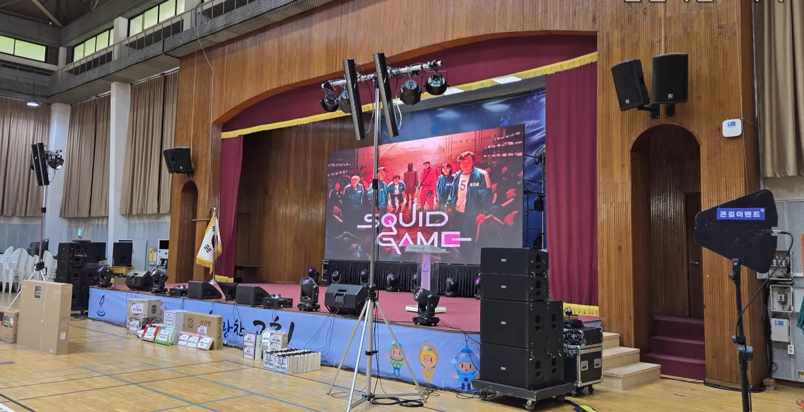

화성 체육대회 대행에서 담당자가 먼저 정할 것은 참가자 구성과 날씨 대안입니다. 젊은 직원이 많은지, 여러 연령이 섞였는지에 따라 종목의 강도가 달라지고, 운동장 행사는 비 · 바람 · 더위에 따라 하루가 바뀝니다. 프로이벤트 화성지사는 경기도 화성시 효행구 정남면 문학리 85-5 에 있고, 서울 본사에서 화성시청까지는 차로 약 45분 · 46.3km 입니다. 이 글은 기업 · 기관 체육대회를 처음 맡은 담당자를 위해 종목부터 철수까지 순서대로 정리했습니다.

- 종목은 전원 참여 → 팀 대항 → 응원전 → 계주 순으로 흐름을 만들고, 강도는 참가자 연령에 맞춥니다.
- 운동장 세팅은 본부석 · 팀 천막 · 음향 · 아치의 위치를 배치도로 먼저 정합니다.
- 더위에는 그늘과 물, 바람에는 천막 고정, 비에는 실내 대안을 준비합니다.
- 화성에는 프로이벤트 화성지사가 있어 대표 직통(010-3999-8262)으로 바로 상담할 수 있습니다.
1. 화성 체육대회 대행, 참가자 구성부터
체육대회 종목표를 받기 전에 먼저 알려 주셔야 할 것은 참가자 구성입니다. 신입사원 위주의 체육대회와 전 직원 · 가족이 함께하는 체육대회는 같은 종목이라도 강도와 시간이 달라야 합니다. 경쟁이 너무 세면 다치는 사람이 생기고, 너무 약하면 응원석이 조용해집니다.
| 참가자 구성 | 종목 방향 | 주의할 것 |
|---|---|---|
| 신입 · 젊은 직원 위주 | 팀 대항 · 계주 · 미션 중심 | 과열 방지, 심판 기준 미리 공유 |
| 여러 연령이 섞임 | 전원 참여 · 협동 종목 중심 | 오래 뛰는 종목 줄이기 |
| 가족 동반 | 가족 종목 · 놀이 기구 · 경품 | 아이 안전 구역 따로 |
| 외국인 직원 포함 | 규칙이 단순한 종목, 화면 그림 안내 | 통역 · 안내 방법 |
2. 종목 흐름과 테마 체육대회
종목은 하나씩 고르기보다 하루의 흐름으로 짭니다. 전원이 함께 움직이는 종목으로 열고, 팀 대항으로 열기를 올린 뒤, 점심 후에는 응원전과 레크리에이션으로 몸을 풀고, 마지막을 계주로 닫는 흐름이 무난합니다. 드라마 · 게임을 본뜬 테마 체육대회처럼 콘셉트를 하나 정하면 종목 이름과 무대 화면, 진행 멘트가 하나로 묶입니다.
| 시간 | 순서 | 준비물 |
|---|---|---|
| 09:30 | 입장 · 개회 · 다 같이 몸풀기 | 음향, 팀 깃발 · 조끼 |
| 10:00 | 전원 참여(큰 공 띄우기 · 단체 줄넘기) | 대형 공, 긴 줄 |
| 10:50 | 팀 대항(줄다리기 · 협동 경주) | 줄다리기 줄, 협동 도구 |
| 12:00 | 점심 · 휴식 | 천막, 의자, 테이블, 물 |
| 13:00 | 응원전 · 레크리에이션 | 레크리에이션 강사, 응원 음악 |
| 14:00 | 미션 게임 · 이어달리기 | 바통, 라인 |
| 14:50 | 시상 · 경품 · 폐회 | 시상대, 경품 목록 |

3. 운동장 세팅 — 본부석 · 천막 · 음향
운동장 세팅은 배치도 한 장으로 정리합니다. 본부석은 해를 등지는 쪽에 두어 진행자와 심판이 운동장을 잘 보게 하고, 팀 천막은 경기장 양쪽에 고르게 둡니다. 스피커는 본부석에만 몰지 말고 응원석 쪽에도 나눠 두어야 운동장 끝까지 진행 멘트가 들립니다.
- 본부석: 진행자 · 음향 운영 · 심판 · 시상대 · 구급 용품.
- 팀 천막: 팀 수만큼, 팀 깃발로 표시. 의자와 물을 함께.
- 음향: 라인어레이 스피커 · 무선 마이크. 운동장 크기에 맞춰 스피커를 나눔.
- 아치 · 현수막: 입구와 결승선, 단체 사진 배경.
4. 더위 · 바람 · 비 대비
야외 체육대회의 변수는 날씨입니다. 더위에는 그늘 천막과 물, 쉬는 시간을 늘리고, 한낮에는 오래 뛰는 종목을 피합니다. 바람에는 천막이 약합니다. 기상청 기준으로 강풍주의보는 육상에서 풍속 14m/s 이상 또는 순간풍속 20m/s 이상이 예상될 때 발표되지만, 그보다 약한 바람에도 천막이 흔들리면 고정을 다시 하거나 접는 것이 안전합니다.
| 날씨 | 대비 |
|---|---|
| 더위 | 그늘 천막, 물 · 쉬는 시간 늘리기, 한낮 종목 강도 낮추기 |
| 바람 | 천막 고정 점검, 흔들리면 접기, 현수막 바람구멍 |
| 비 | 실내 체육관 · 강당 대안, 실내 종목 목록, 전날 결정 시각 |
| 미세먼지 | 실내 대안과 같은 기준으로 판단 |

5. 화성 체육대회 준비 일정
화성(동탄 · 봉담 · 향남 · 병점 · 정남면 · 화성시청 등)의 행사장은 화성지사와 서울 본사에서 함께 준비합니다. 서울 본사에서 화성시청까지 차로 약 45분 · 46.3km 라, 오전에 시작하는 체육대회는 설치 시작 시각을 넉넉히 앞당겨 잡습니다.
- 6주 전: 날짜 · 인원 · 장소 · 예산 범위 정리, 견적과 1차 제안 받기.
- 4주 전: 팀 수 · 종목 · 테마 확정, 진행자 섭외.
- 2주 전: 팀 명단 · 시상 · 경품 목록, 실내 대안 장소 확정.
- 전날: 예보 확인, 실내 이동 여부 결정.
- 당일: 설치 → 음향 점검 → 개회 → 종목 → 시상 → 철수 · 사진 정리 · 결과 보고.
6. 체육대회 견적 항목표
자동 견적서에서 항목을 골라 보내 주시면 담당자가 확인 후 1영업일 안에 1차 제안과 견적으로 답합니다. 금액은 인원 · 장소 · 종목 구성에 따라 달라 상담 때 안내합니다.
| 항목 | 확인할 것 |
|---|---|
| 체육대회(기획 · 진행) | 종목 · 시간표 · 현장 운영 |
| 체육대회 게임도구 | 종목 수 · 팀 수 |
| 음향 (대형) | 운동장 크기 |
| 천막 | 팀 천막 · 본부석 |
| 의자 · 테이블 | 팀 천막 · 본부석 |
| 레크리에이션 강사 | 응원전 · 레크리에이션 |
| 행사 스태프 | 심판 · 구역 진행 · 안전 |
| 출장비 | 행사장 이동 |
화성 지역 안내는 화성 행사 안내에 있습니다. 워크샵과 묶는 구성은 서초 워크샵 레크리에이션 글도 참고하세요.
자주 묻는 질문
게임도구와 음향만 따로 빌릴 수 있나요?
체육대회 게임도구와 음향만 구성하는 것도 상담할 수 있습니다. 종목 수와 운동장 크기를 알려 주세요.
비가 오면 취소되나요?
실내 체육관 · 강당 대안을 미리 정해 두고, 전날 예보를 보고 담당자와 함께 옮길지 결정합니다.
화성지사로 바로 연락할 수 있나요?
대표 직통 010-3999-8262 가 화성지사 번호를 겸합니다. 서울본사는 02-457-8262 입니다.